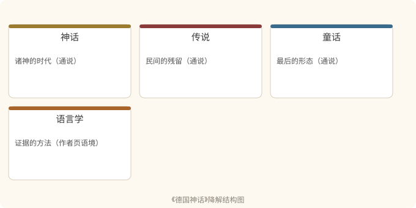

德国神话
一、基本信息
| 作者 | 格林兄弟 |
|---|---|
| 成书/出版 | 1835年（作者页注记：Britannica——德国神话 (1835)） Brothers Grimm — Encyclopaedia Britannica（百科全书） |
| 国别/地区 | 德国 |
| 时代 | 近代 · 19世纪30年代 |
| 体裁 | 神话研究 |
| 语言 | 德语 |

《德国神话》降解结构图（主题·结构图）
二、创作背景
作者页注记：德国神话——'（Britannica：1835）'。
Britannica：格林——童话与语言学的双峰（作者页语境——待核）。
题材（通说待核）：日耳曼诸神的'堕落史'——从神话到民间信仰与童话。
三、内容脉络
（通说待核）诸神（沃坦等）的残留：习俗、传说与迷信。
（通说待核）'神话→传说→童话'的降解序列。
四、主要人物表
| 人物 | 身份 | 说明 |
|---|---|---|
| （研究著作无人物） | —— | 神话研究 |
五、主题与艺术特点
- 日耳曼神话的重建（B注记：1835）。
- '神话-传说-童话'的降解（通说待核）。
- 语言学的证据法（作者页语境）。
六、影响与评论
- Britannica：Deutsche Mythologie (1835)（作者页注记）。
Brothers Grimm — Encyclopaedia Britannica（百科全书） - Britannica：格林兄弟《儿童与家庭童话集》为代表作（作者页交叉）。
Brothers Grimm — Encyclopaedia Britannica（百科全书）
七、阅读建议
难点
- 19世纪语言学方法。
- 北欧/德意志神话的对应。
- 《德国神话》中译名（《德意志神话学》）待核。
- 德文原版（公有领域）。
格林学术侧面；与《童话集》对读。
八、待核实
- 1835年出版细节待核。
- '沃坦'章细节待核。
- 与《童话集》的方法关联待核。